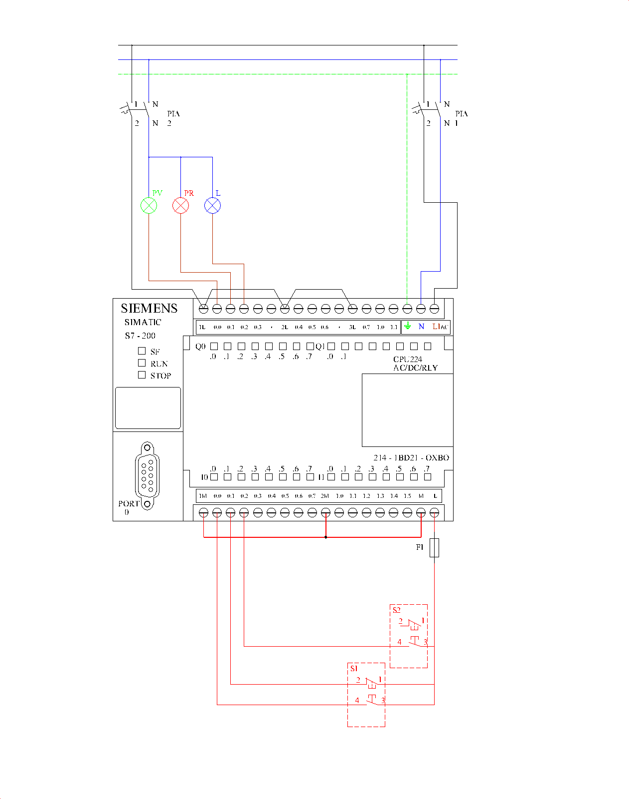

2.- Punto de luz controlado mediante PLC / LOGO! controlada mediante Autómata Programable (PLC)
1. Asignación de señales en el autómata programable.
- I0.0: Pulsador marcha (S1) — contacto NO.
- I0.1: Pulsador paro (S1) — contacto NC.
- I0.2: Pulsador marcha (S2) — contacto NO (solo se cablea el contacto de marcha).
- Q0.0: Piloto verde (PV).
- Q0.1: Piloto rojo (PR).
- Q0.2: Bombilla (L).
Entradas digitales
Salidas digitales
2. Programa básico en Ladder (S7-200)
| Bloque / Segmento | Lógica | Función |
|---|---|---|
| Segm. 1 | I0.0 → S M0.0 (1) | /I0.1 → R M0.0 (1) | Memoria de circuito activado |
| Segm. 2 | M0.0 → Q0.0 | /M0.0 → Q0.1 | Piloto verde / piloto rojo |
| Segm. 3 | M0.0 · I0.2 → S Q0.2 (1) | Encendido de la bombilla solo con el circuito activado |
| Segm. 4 | /M0.0 → R Q0.2 (1) | Apagado al desactivar el circuito con S1 paro |
2.1. Mejora: programación con relé de impulsos
| Bloque / Segmento | Lógica | Función |
|---|---|---|
| Segm. 3 | M0.0 · I0.2 + flanco P → conmuta M0.1 (telerruptor) | Cada pulsación de S2 cambia el estado de la luz |
| Segm. 4 | /M0.0 → R M0.1 (1) | Al desactivar el circuito se apaga la luz |
| Segm. 5 | M0.1 → Q0.2 | Salida de la bombilla |
3. Esquema
Esquema multifilar de la práctica 2.

×